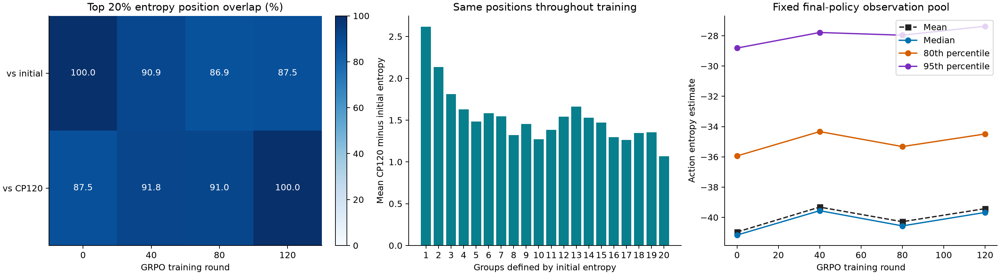

药瓶 · 原始π0.5 → Clean GRPO CP120 · 同一批32局（22成功），5578个实际执行位置。
各检查点读取同一观察、使用同四份噪声；没有把不同轨迹的同一时间强行配对。
| 与谁比较 | 原始0轮 | 40轮 | 80轮 | 120轮 |
|---|---|---|---|---|
| 原始模型 | 100.0% | 90.9% | 86.9% | 87.5% |
| CP120 | 87.5% | 91.8% | 91.0% | 100.0% |
初始与CP120重合87.5%。意思是：各自挑出最不一致的20%动作位置，有87.5%是共同位置。它不是成功率。独立随机挑选的参照约20%，自身比较为100%。

这里“熵”是同一模型四噪声动作的对角高斯估计，使用归一化真实14维、样本方差及ε=10⁻⁶。数值为负正常。结论先限定于这批药瓶观测；CP120是本次分析终点，训练已按授权提前停止。
输出时刻：2026-11-04。视频、完整观测与大权重保留服务器；打包文件含动作预测、噪声、逐位置统计与图稿。Overleaf未修改。